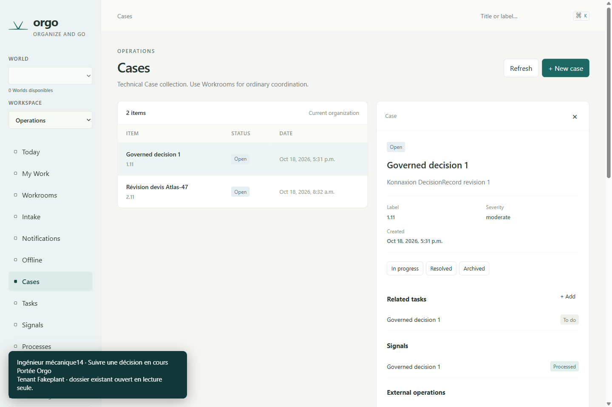
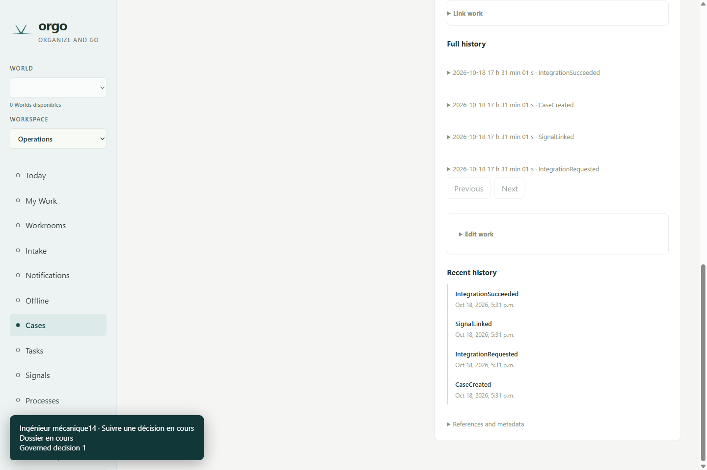
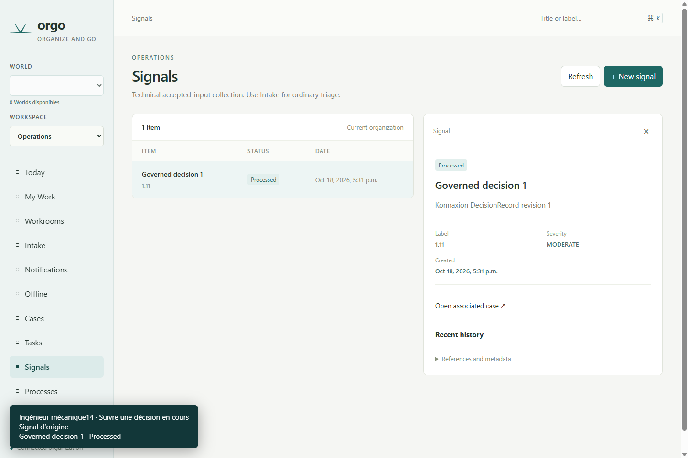
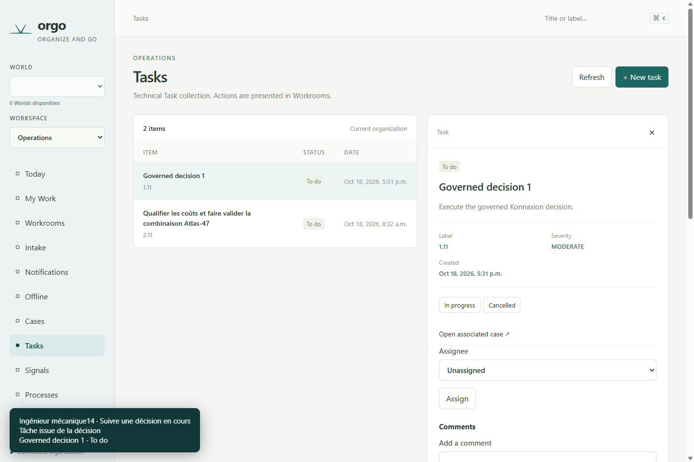
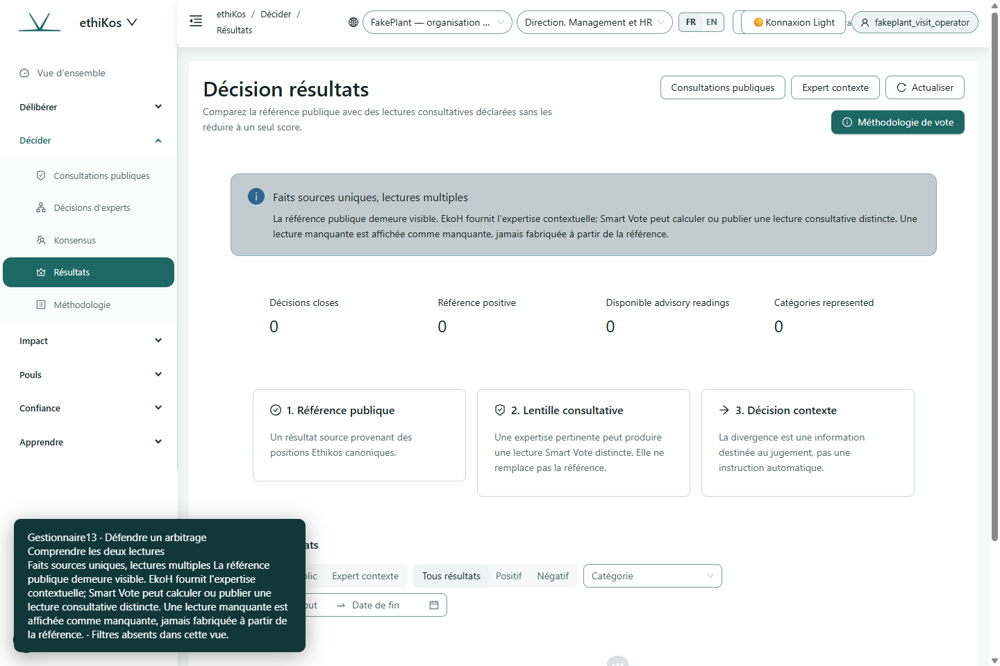
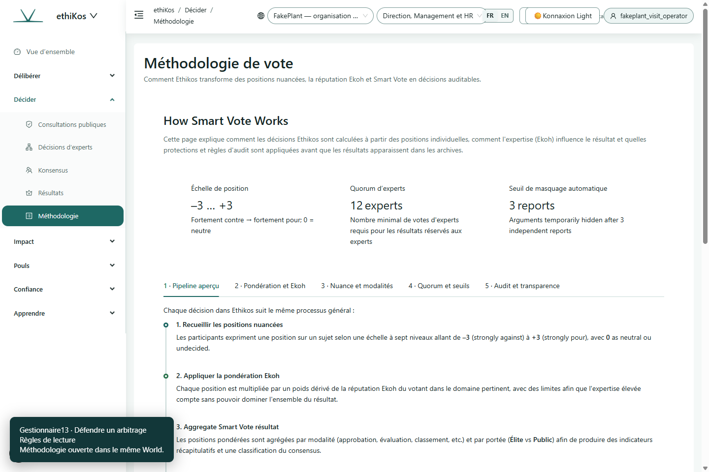

Suivre une décision en cours
Ingénieur mécanique14 · fp-electromecanique-informatique · VISITÉ
Partir de la décision déjà reçue dans Orgo et retrouver le signal et la tâche qui lui sont liés.
Retrouver le signal d’origine, la tâche liée et son statut réel.
rôle et appartenance au World
Portée Orgo
Tenant Fakeplant · dossier existant ouvert en lecture seule.

Dossier en cours
Governed decision 1

Signal d’origine
Governed decision 1 · Processed

Tâche issue de la décision
Governed decision 1 · To do

Défendre un arbitrage
Gestionnaire13 · fp-direction-management-hr · VISITÉ
Avant d’annoncer une décision, la direction vérifie comment les résultats publics et les avis experts sont présentés.
Changer de lecture dans les résultats, puis ouvrir la méthodologie.
rôle et appartenance au World
Comprendre les deux lectures
Faits sources uniques, lectures multiples La référence publique demeure visible. EkoH fournit l'expertise contextuelle; Smart Vote peut calculer ou publier une lecture consultative distincte. Une lecture manquante est affichée comme manquante, jamais fabriquée à partir de la référence. · Filtres absents dans cette vue.

Règles de lecture
Méthodologie ouverte dans le même World.
